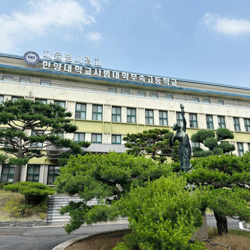

2022년 03월 01일 기준으로 각 학년별 평균 학생수 317명, 각 학년별 학급수는 10반이다. 현재 1학년은 11반까지 있다. 1학년은 공통과정, 2, 3학년은 의약이공과정(이과)와 국제인문과정(문과)로 구분됐었다. 2020학년도 부터는 전 학년이 공통과정으로 분류된다.
기본적으로 대한민국 인문계 고등학교의 교육과정을 따른다. 다만, 자율형사립고이기 때문에 교육과정 편성(과목 및 시수 편성)에 있어 좀 더 융통성이 있다. 아무래도 대학입시에 초첨을 맞추고 있기 때문에 국영수 과목의 수업시수가 많은 편이나 극단적으로 편성되지는 않았다.[3] 연간활동을 보면 합창제나 체육대회 등 예체능 활동도 골고루, 꽤 많이 섞여 있는 편.